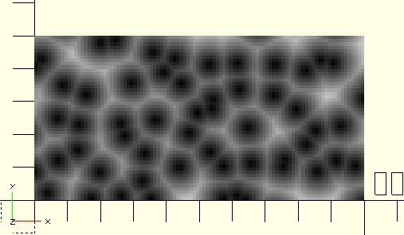
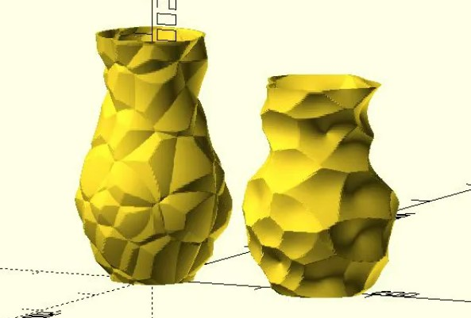

網格 Worley 雜訊
March 31, 2022為了建立〈Worley 雜訊〉，指定範圍中每個位置，必須跟全部的細胞核求得距離，然後取最接近的細胞核，如果細胞核越多，要比較的次數也越多，這會是很沉重的運算。
鄰近的細胞
如果指定範圍內的細胞核，大致上是均勻分佈，那麼某位置跟遠處細胞核的距離求取及比較，基本上是沒有意義，若能事先排除太遠處的細胞核，就可以省下不少計算的時間，只不過細胞核又要有隨機性，如何能事先排除太遠處的細胞核？
如果想產生的 Worley 雜訊，每個細胞的大小不至於相差太大的話，可以在指定範圍內分割網格，然後在每個網格中隨機散佈一個細胞核。
就網格中某個位置來說，跟它有可能是最近距離的細胞核，就是其所處的網格九宮格內，因此只要針對九個細胞核計算就可以了。
dotSCAD 的 nz_worley2 函式，可以基於網格來產生 Worley 雜訊，只要指定座標位置、隨機種子以及範圍，它會自動分割網格，在每個網格中隨機散佈一個細胞核，然後計算該座標位置的 Worley 雜訊：
use <noise/nz_worley2.scad>
size = [100, 50];
grid_w = 10;
seed = 51;
points = [
for(y = [0:size.y - 1], x = [0:size.x - 1])
[x, y]
];
cells = [for(p = points) nz_worley2(p.x, p.y, seed, grid_w)];
max_dist = max([for(c = cells) c[2]]);
for(i = [0:len(cells) - 1]) {
c = cells[i][2] / max_dist;
color([c, c, c])
linear_extrude(cells[i][2])
translate(points[i])
square(1);
}
nz_worley2 傳回 [x, y, noise]，表示某座標位置是在細胞核 [x, y] 的勢力範圍內，雜訊值 noise，從上往下看模型的話，會是長這樣：

如果你事先已經有一組座標，可以直接使用 nz_worley2s 函式，例如，若只使用細胞核 [x, y] 與所在網格原點的距離為高度：
use <noise/nz_worley2s.scad>
size = [100, 50];
grid_w = 10;
seed = 51;
points = [
for(y = [0:size.y - 1], x = [0:size.x - 1])
[x, y]
];
cells = nz_worley2s(points, seed, grid_w);
for(i = [0:len(cells) - 1]) {
h = norm([cells[i].x, cells[i].y]) % grid_w;
color([h, h, h] / grid_w)
linear_extrude(h)
translate(points[i])
square(1);
}
可以形成以下的模型：
三維的 Worley 雜訊
〈Worley 雜訊〉的做法，也可以擴展到三維，不過計算量龐大；網格的 Worley 雜訊做法，也可以擴展到三維，dotSCAD 的 nz_worley3 函式就是實現。
例如，來做個熔岩球：
use <voxel/vx_sphere.scad>
use <noise/nz_worley3.scad>
grid_w = 10;
radius = grid_w * 2;
seed = 51;
points = vx_sphere(radius);
cells = [for(p = points) nz_worley3(p.x, p.y, p.z, seed, grid_w)];
max_dist = max([for(c = cells) c[3]]);
for(i = [0:len(cells) - 1]) {
c = cells[i][3] / max_dist * 1.5;
color([c > 1 ? 1 : c, 0, 0])
translate(points[i])
cube(1);
}
dotSCAD 的 voxel 中，提供了一些建立體素（voxel）資料的函式，vx_sphere 是其中之一，簡單來說，可以想像成用方塊堆出一顆球，不過 vx_sphere 傳回的是座標資料，你不一定要用方塊來堆就是了；以上的程式會產生：
如果你已經有一組座標了，那麼可以使用 nz_worley3s，例如：
use <voxel/vx_sphere.scad>
use <noise/nz_worley3s.scad>
grid_w = 10;
radius = grid_w * 2;
seed = 51;
points = vx_sphere(radius);
cells = nz_worley3s(points, seed, grid_w);
for(i = [0:len(cells) - 1]) {
c = (norm([cells[i][0], cells[i][1], cells[i][2]]) % radius) / radius;
color([c, c, c])
translate(points[i])
cube(1);
}
這會產生以下的模型：
在〈Worley 雜訊〉談過，計算雜訊的依據不一定要是直線距離，也可以是曼哈頓距離或切比雪夫距離等，這邊提及的網格 Worley 雜訊相關函式，都支援 dist 參數，可以指定 "manhattan"、"chebyshev" 等值。
那麼，你有辦法用 Worley 雜訊，做出〈Worley vase〉嗎？
